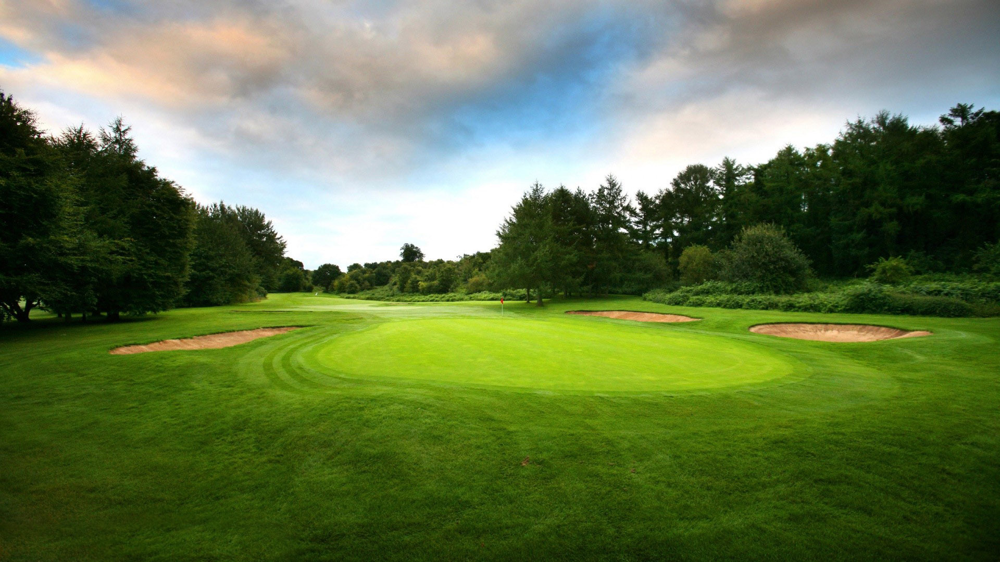
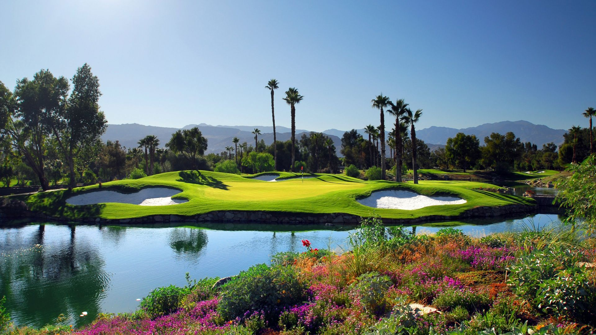
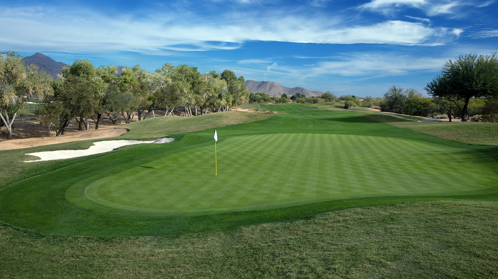
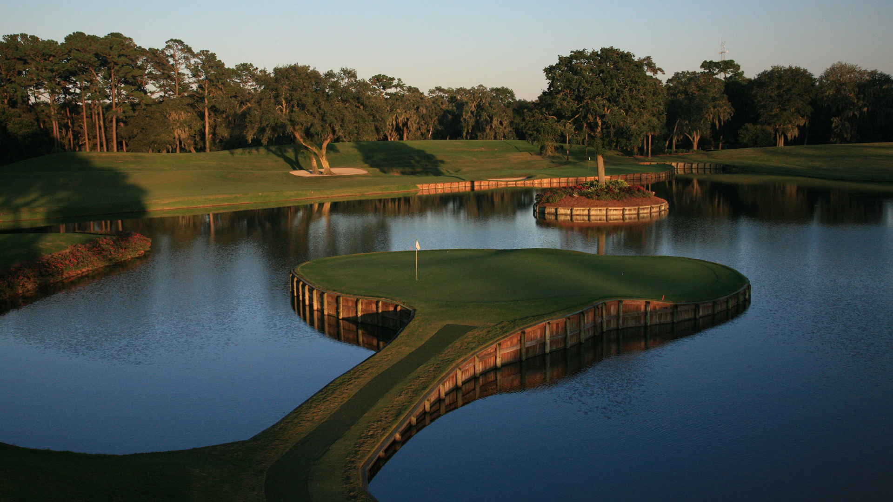
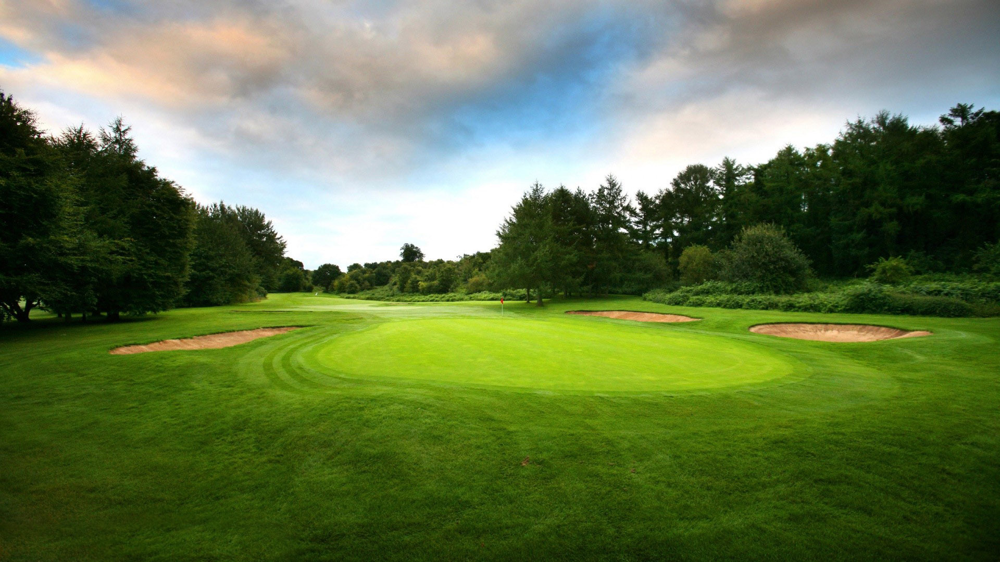
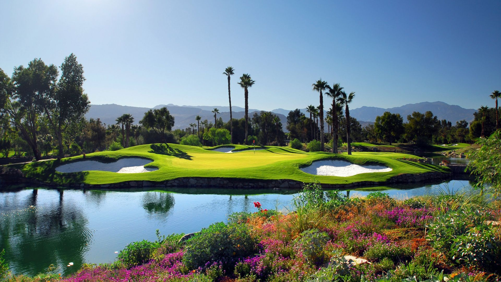
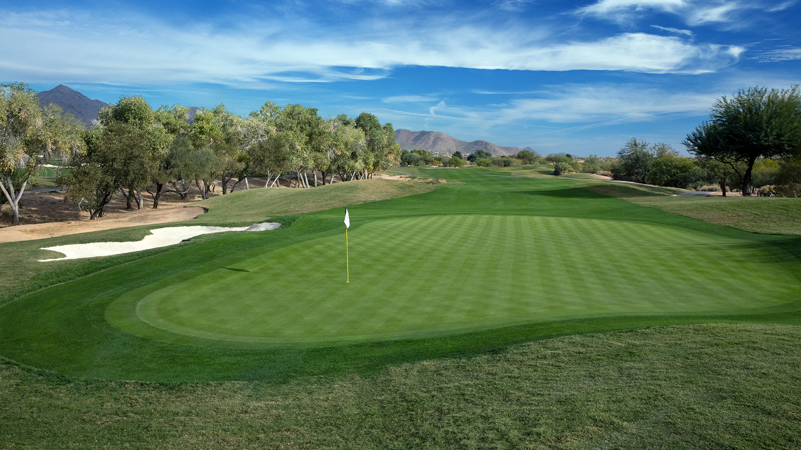
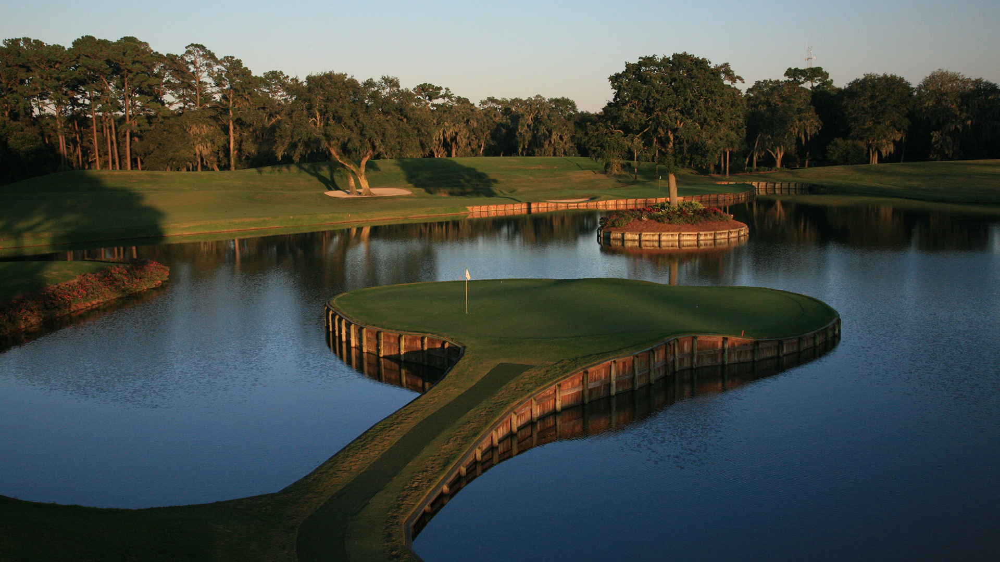
⬆
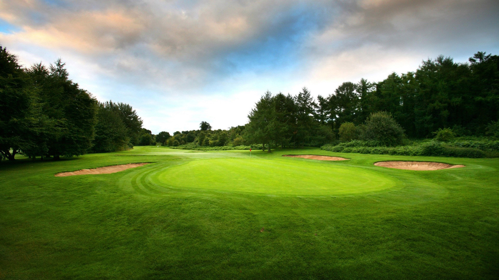
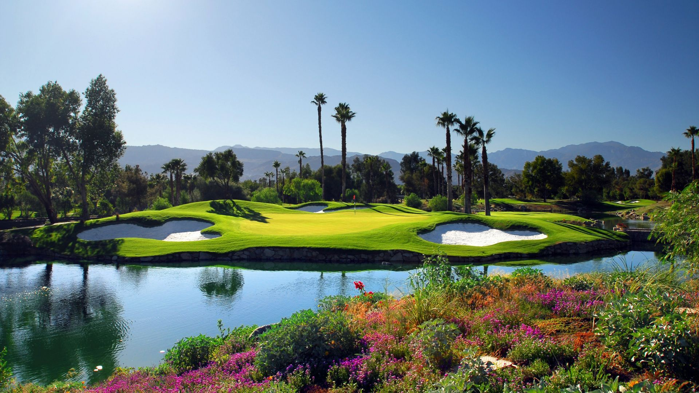
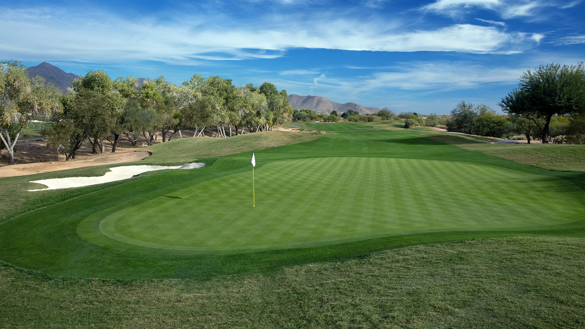
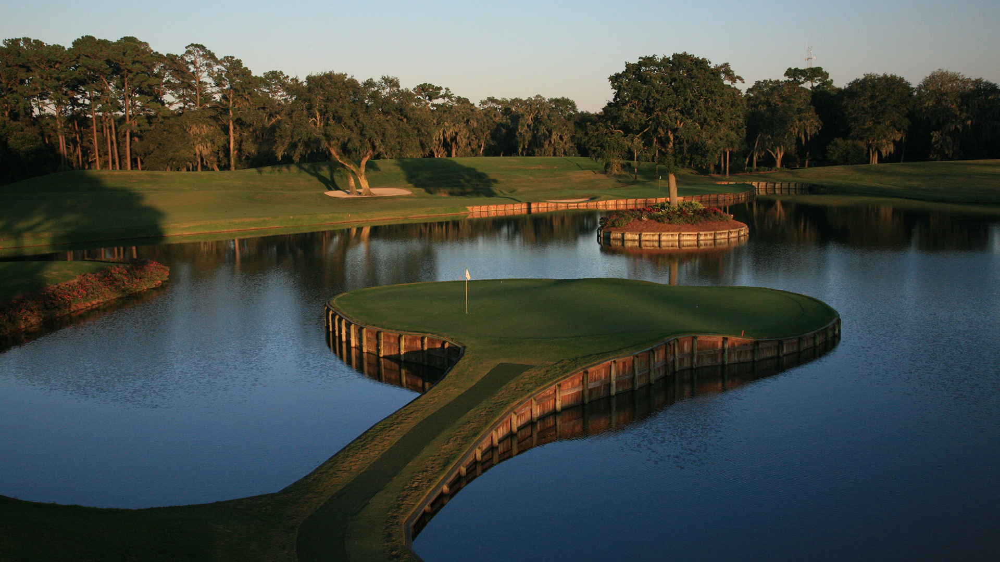
Гольф (англ. golf) — спортивна гра, в якій окремі учасники або команди змагаються, заганяючи маленький м'яч для гольфу в спеціальні лунки ударами ключок, намагаючись пройти відведену дистанцію за мінімальне число ударів. Гольф є олімпійським видом спорту, що визнаний Міжнародним олімпійським комітетом. Він входив до програми Олімпійських ігор 1900 та 1904 років. Виконавчий комітет МОК у серпні 2009 року рекомендував включити гольф до програми Олімпійських ігор 2016 року. На Олімпіаді в Ріо-де-Жанейро було проведено два змагання — серед чоловіків та жінок.
Під час гри удари по м'ячу здійснюються спеціальними ключками різного типу. Різні ключки використовуються для здійснення різного типу ударів. У спорядження гравця може входити не більше 14 різних ключок, що виготовляються у відповідності до певних стандартів. Важливим елементом спорядження в грі є спеціальний м'яч для гольфу. Такий м'яч має особливу конструкцію, що забезпечує йому механічну міцність відносно ударного навантаження та зменшення аеродинамічного опору при польоті в повітрі.
Вважається, що гра в гольф зародилася в Шотландії й була винайдена пастухами, які за допомогою ціпків (майбутніх ключок) заганяли камені в кролячі нори. Імовірно гра існувала вже в XIV столітті, а в XV столітті в Шотландії вийшло декілька законів, що забороняли грати в «гольф». У XVII столітті ключками в м'яч грали вже в Нідерландах. Гра в її сучасному вигляді оформилася в XIX столітті у Шотландії.
У гольф грають на спеціальних полях, на яких зазвичай є 18 або 9 лунок. Великі турніри тривають чотири дні й загальна кількість лунок, які треба пройти, зазвичай дорівнює 72. В грі використовуються спеціальні м'ячі для гольфу, що вирізняються складною будовою та мають цікаві аеродинамічні характеристики.
Гольф один з найпопулярніших видів спорту й відпочинку у світі. В Україні поширений мало, але здобуває популярність з кожним роком.
Найвизначнішими змаганнями в професійному гольфі є Мастерз, Відкритий чемпіонат Сполучених Штатів, Відкритий чемпіонат Британії, чемпіонат американського професійного туру. Великий престиж мають командні змагання: Кубок Райдера (змагаються гравці Європи й Сполучених Штатів) і Кубок Президента (США проти збірної світу).
Крім четвірки найпрестижніших турнірів гольфісти грають у турах — системах турнірів, що тривають увесь сезон. Серед турів — тур Професійної асоціації гольфу в США, європейський тур, азійський тур тощо. Змагання в турах є водночас відбірковими для великих турнірів та для формування збірних команд.